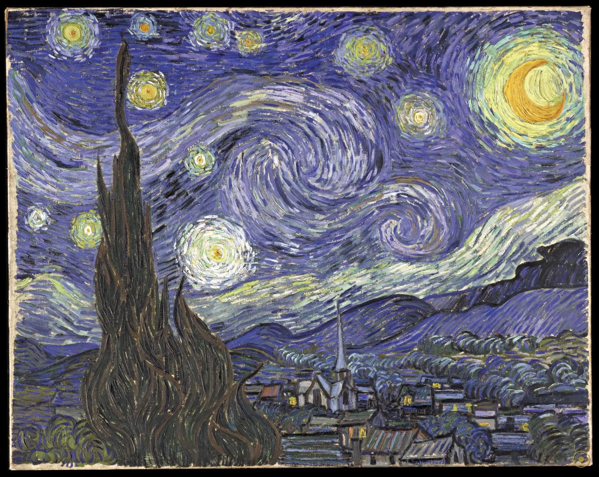
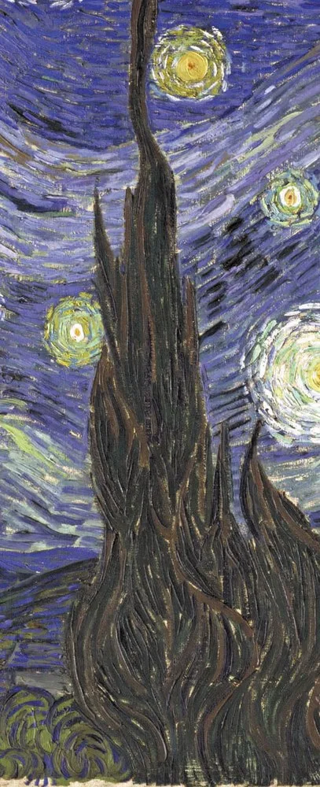
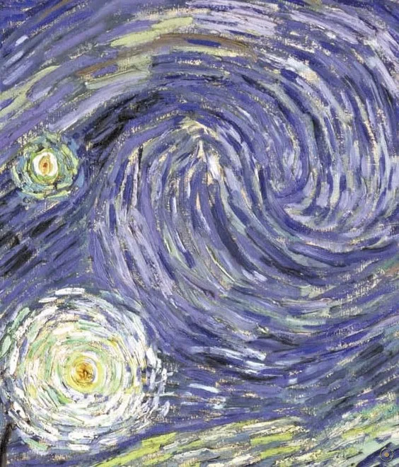
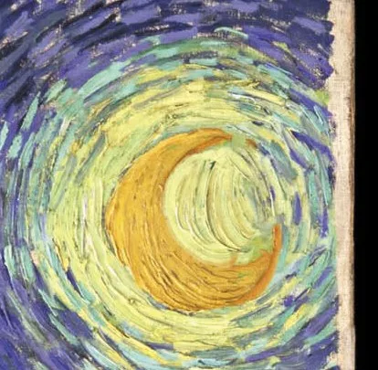
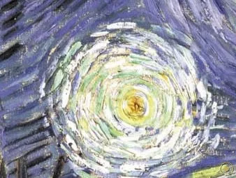
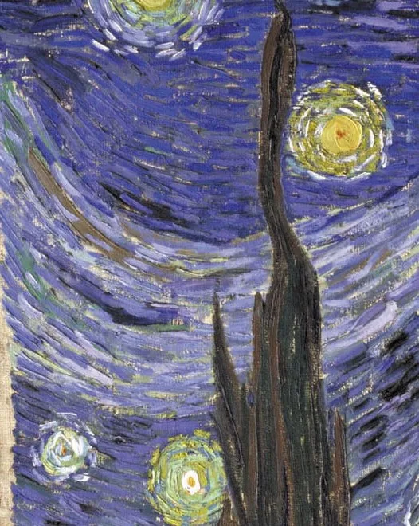
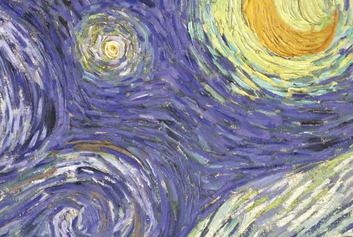
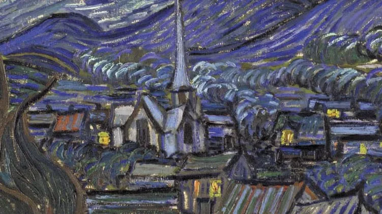
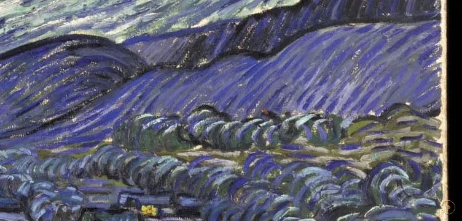

「Ce matin, j'ai vu la campagne de ma fenêtre longtemps avant le lever du soleil, avec rien que l'étoile du matin, qui paraissait très grande。」——梵高在圣雷米的信里这样写道。
这不是题在画上的句子，而是一封家书。1889 年初夏，被关在疗养院里的梵高，每天清晨天没亮就趴在窗边，看田野、看一颗显得特别大的晨星。几个月后，他把这扇窗外的夜，画成了《星夜》。可画里并没有写生的冷静：天空在转，星星在飞，一棵柏树像火一样烧向天顶。
宁静与风暴，在这幅画里是同一个人。梵高一生只卖出过寥寥数幅画，死后才被捧上神坛；而《星夜》在他活着时，连最疼他的弟弟提奥都嫌它「太过了」。它画完五十二年之后，才有博物馆愿意收它。今天它挂在纽约现代艺术博物馆（MoMA）五楼，是全球被复制、被引用最多的夜空之一。
所以这一页不打算替你定义它。我们顺着梵高的眼睛走进去：先抬头看那弯月亮，再顺着左侧的柏树落到沉睡的村庄，最后停在右下方那道起伏的山——注意，整片天都在旋，而大地，正跟着天一起呼吸。
—— 文森特·梵高致弟弟提奥，圣雷米，1889 年 6 月前后（据英译转译）
在本页左下角，可以点亮这首与画同岁的夜曲。
从左边烧向天空的柏树，到右边睡着的村庄——梵高把整座夜，拧成了一场漩涡。

点击画面中的 ✦ 光点 查看画面细节 · 图片来源：Wikimedia Commons（公有领域）
它画完当年就被主人嫌「太过了」，却在五十二年后才等到一座博物馆愿意收它。
1889 · 圣雷米
1889 年 5 月，梵高在割耳事件后自愿住进圣雷米的圣保罗精神病院。6 月，他从朝北的病房窗口（或据记忆与想象）画下了《星夜》。画仅 73.7×92.1 厘米，却用厚涂法（impasto）把颜料堆出浮雕般的高度。他写信给提奥，说想画「夜比白天更富色彩」的画——这一幅，就是答案。
➤1889 冬 · 一封信
同年 11 月，梵高在给画家朋友贝尔纳的信里把《星夜》称作一次「挫折」，并自嘲「又一次，我放任自己把星星画得太大了」。连最疼他的弟弟提奥收到画后也委婉批评：「对风格的追逐，带走了事物真正的情感。」一幅后来被奉为神作的画，在诞生当年几乎无人喝彩。
➤1941 · 纽约
梵高 1890 年离世，画归弟弟提奥，再经提奥遗孀乔安娜之手流转。1907 年它挂在鹿特丹藏家范·斯托克家的温室里，主人还得在炎夏给它拉上保护帘。1941 年，纽约现代艺术博物馆（MoMA）通过莉莉·P·布利斯遗赠，以「交换」方式把它收入馆藏——这时距它画完已 52 年，距画家去世已 51 年。
真事一 · 它从来不叫「星夜」。梵高自己只管它叫「星夜的天空」「夜的研究」或「夜的效果」；提奥在信中称其为「月光下的村庄」。画家去世后，它一度被叫做「群星」。直到 1927 年鹿特丹的一次展览，才正式用上今天这个名字（荷兰语 Sterrennacht）。一个今天无人不知的标题，比画本身小了三十八岁。
真事二 · 梵高在「平静」里画不出湍流。物理学家阿拉贡与纳乌米斯对比发现，梵高那些呈现柯尔莫哥洛夫湍流指纹的作品，全部出自他「精神剧烈动荡」的时期；而画于他自述「绝对平静」状态的《包着耳朵、叼着烟斗的自画像》，画面里找不到这一指纹。研究谨慎地猜测：也许是内心的动荡与湍流，在动力学上共用某种相似的结构——但这仍只是假说。
真事三 · 它是「交换」来的镇馆之宝。1941 年 MoMA 并不是买下《星夜》，而是用画商保罗·罗森堡拿它交换莉莉·布利斯遗赠的三幅画（塞尚两幅、图卢兹-劳特累克一幅）。在此之前，它辗转于私人手中整整 52 年，几乎没有博物馆想要。今天它挂在 MoMA 五楼，是全球访客排队朝圣的对象。
※ 标题由来、湍流研究结论与 1941 年入藏方式均据 MoMA 公开档案与公开报道；「精神动荡—湍流」关联为研究者假说，非定论；书信据英译转译，措辞或因译本而异。
把画面拆开看：每一团光都在转，连村庄都被卷进了漩涡的边。

美得像方尖碑——梵高用画刀把故乡的夜，钉进南法的天。

柯尔莫哥洛夫标度律，被一支画笔提前了一百年画了出来。

深蓝里唯一的暖源，也是眼睛最先落到的地方。

1889 年初夏黎明前的启明星，被放大、定格成夜里最稳的一束光。

短促卷曲的笔触，把光从画布上「拧」了出来。

和主漩涡同一种旋转——风正从天边吹进村庄。

看不见的村庄，是被搬来的故乡；尖顶更像荷兰而非普罗旺斯。

阿尔皮耶山被压低，让天空占了画面的三分之二——天空才是主角。
梵高画的是「黎明前」——信里写他在日出前很久就望着窗外，只有晨星。可画面上星星满布、月亮高悬，更像午夜。这种时间错位，恰是记忆与想象交叠的证据：他不是对着窗外写生，而是把数月来对夜的印象，压缩进同一格画面。
《星夜》几乎全用厚涂法，颜料在画布上堆出可触摸的起伏，柏树尤其几乎只用画刀完成。这种物质感让光不只是「被画出来」，而是「被堆出来」——站在原作前，你能看见黄色星芒是凸起的、蓝色的夜是凹下的。
1889 年的圣保罗精神病院，是梵高自愿入住的地方。他在这里画下了在他之前几乎无人这样画的天空。后世把《星夜》读成「疯癫的杰作」，但画本身给出的证据更朴素：一个人病着，却仍然在工作，并且工作得极好。
阿尔勒与圣雷米的夜，比荷兰明亮得多。梵高从阴郁的北方来到南法，被这里的阳光与星空击中，在信里反复写「南方」「光」「色彩」。圣雷米的夜，成了他晚期风格最后的燃料，也成了现代人心里的夜。
于圣雷米圣保罗精神病院绘成，布面油画，73.7×92.1 cm。
梵高、提奥兄弟相继离世，画归提奥遗孀乔安娜·范·高-邦格。
由鹿特丹藏家乔治特·范·斯托克收藏，一度挂在其温室中，盛夏需拉帘保护。
MoMA 经莉莉·P·布利斯遗赠以交换方式入藏，成为首幅进入纽约公立馆藏的梵高。
MoMA 五楼镇馆之宝，全球最被复制、被引用的夜空之一。